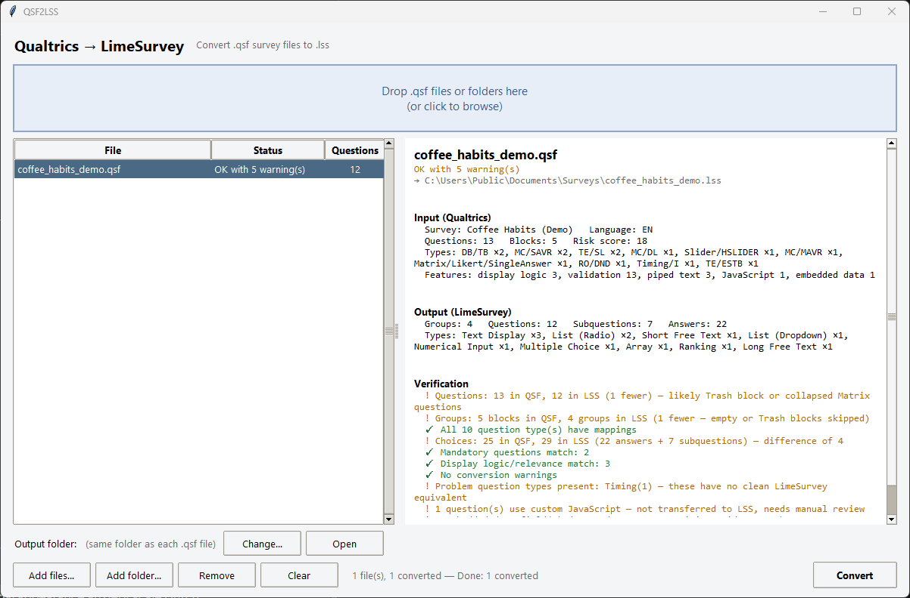
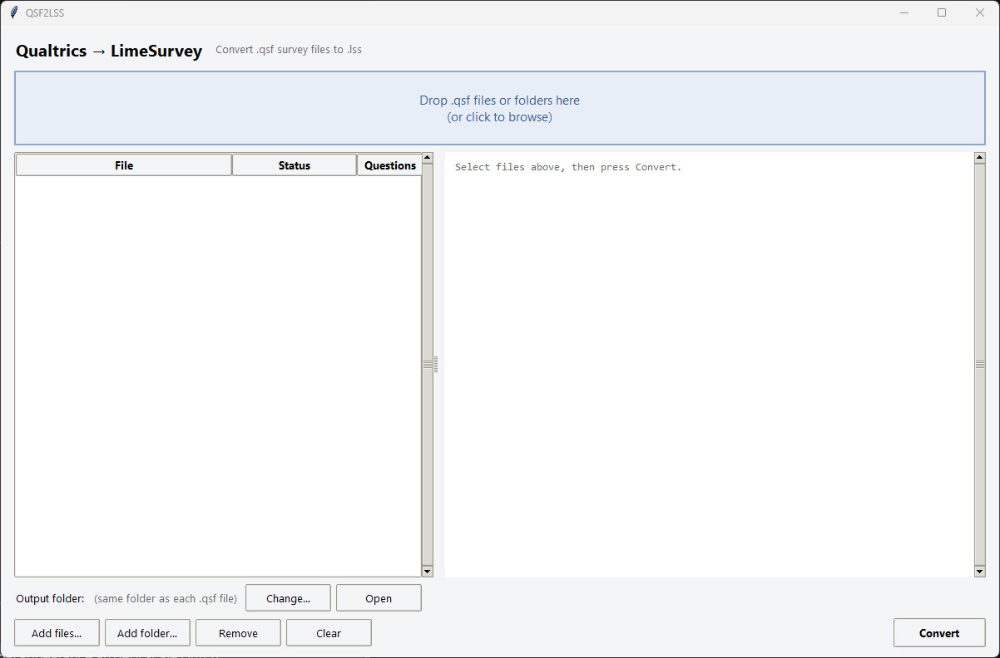
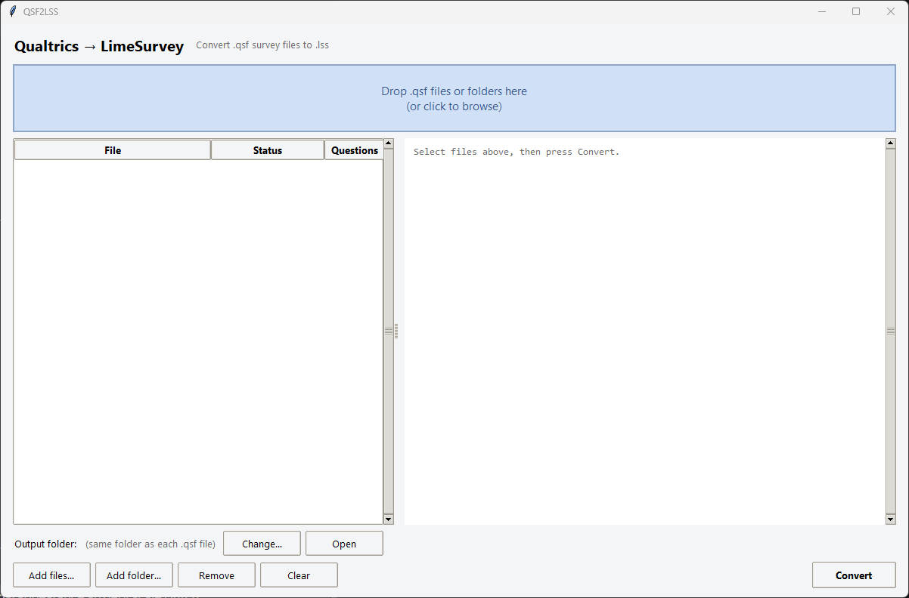
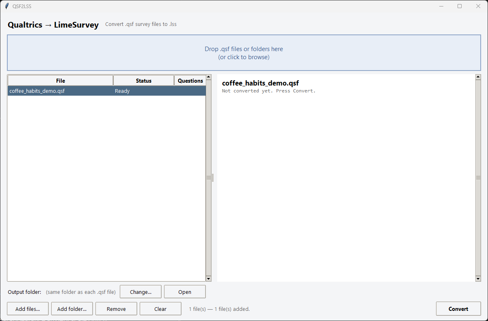
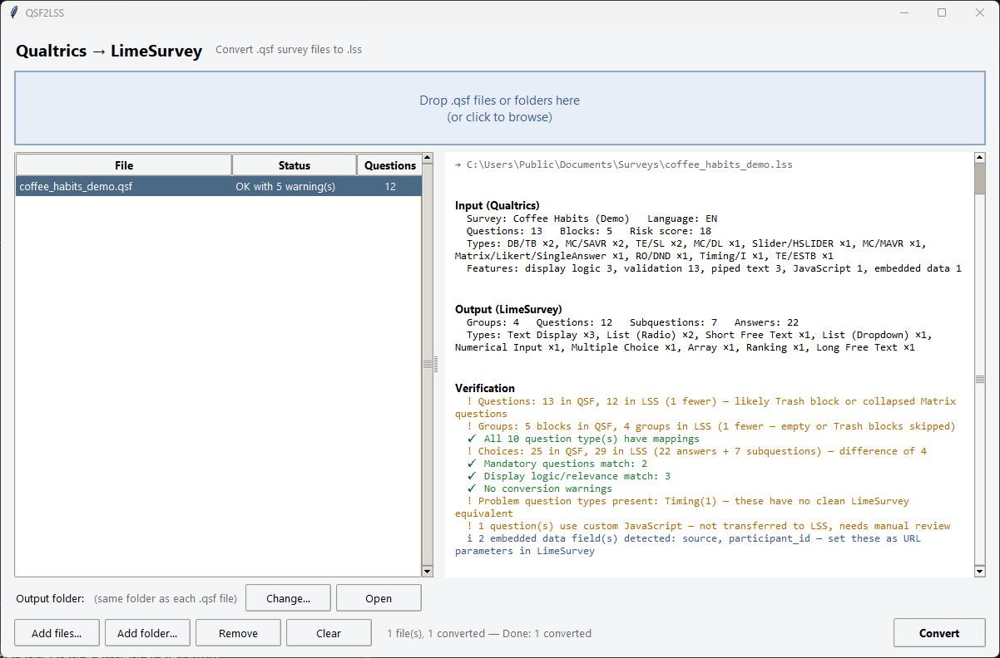

A free tool that converts a Qualtrics survey export (.qsf) into a file you can import into LimeSurvey (.lss). It saves you rebuilding the survey by hand. You'll still need to check the result.
Opening it the first time: on Windows, click More info → Run anyway if a blue warning appears. On a Mac, right-click the app → Open → Open. The program isn't code-signed yet, see code signing policy.
Made with AI: this website and the converter's code were created by AI (Claude, by Anthropic) based on an idea by Konrad Schweizer. The screenshots come from the real program; the demo survey is made up. Spotted a mistake? Tell us on GitHub.
QSF2LSS-GUI and drag the .qsf file onto the window..lss in LimeSurvey: Create survey → Import. Then test the survey before using it.
The walkthrough converts a small, made-up demo survey. You can download the demo .qsf to try it, and compare with the converted .lss.
In Qualtrics, open the survey and export its structure as a .qsf file. The file holds the questions, logic and settings. It contains no response data, so your participants' answers stay in Qualtrics.
Coffee_Habits.qsf is downloaded. You can export several surveys and convert them all in one go.Note: the menu above is a simplified illustration. Qualtrics moves its menus around between versions, so look for “Export survey” under Tools or the survey's … menu.
Download the zip for your computer from the buttons at the top, unzip it anywhere and start QSF2LSS-GUI. It opens one window. There is a drop zone at the top, a file list on the left, a details pane on the right and the controls along the bottom.

QSF2LSS-GUI.exe. If SmartScreen warns you, click More info → Run anyway (the exe isn't code-signed).QSF2LSS-GUI.app → Open → Open. This clears Apple's “unidentified developer” warning.Drag one or more .qsf files, or a whole folder, onto the window. The drop zone lights up while you drag. If you drop a folder, it is searched recursively and every .qsf inside is added. Anything that isn't a .qsf is ignored. If you'd rather not drag, click the drop zone or use Add files… / Add folder….

Each file appears in the list with the status Ready. By default each .lss is written next to its .qsf. Click Change… to send everything to one folder instead. Select a file and press Delete (or Remove) to take it off the list, or press Clear to start over.

Press Convert. Every file is inspected, converted and verified in the background, so the window stays responsive even for large batches. Each row then gets a coloured verdict: green OK, amber OK with warnings or red failed. Click a row to see its details.
The details pane has three parts:
The demo ends as “OK with 5 warning(s)”, and every warning is expected for this survey. They show the kind of thing the report tells you:

| Result | What it says | Why |
|---|---|---|
| ! | 13 questions in QSF, 12 in LSS | The deleted question in the Trash block is skipped on purpose. |
| ! | 5 blocks, 4 groups | Same reason: the Trash block doesn't become a group. |
| ✓ | All 10 question types have mappings | Every type has a LimeSurvey counterpart. |
| ! | Choices: 25 in QSF, 29 in LSS | The matrix's 5 scale points become answer options on top of its 3 statement rows, and the slider's single label is dropped. The net difference is +4. |
| ✓ | Mandatory questions match: 2 | “Force response” was carried over. |
| ✓ | Display logic/relevance match: 3 | All three conditions became relevance equations. |
| ! | Problem type: Timing | LimeSurvey has no timing question, so it becomes a display-only placeholder. |
| ! | 1 question uses custom JavaScript | Qualtrics JavaScript isn't transferred. Rebuild it in LimeSurvey if you need it. |
| i | 2 embedded data fields: source, participant_id | Set these up as URL parameters in LimeSurvey. |
Click Open to show the output folder. It contains the converted survey plus a timestamped plain-text report with everything you saw on screen. Old reports are never overwritten, so keep one next to the survey while you review it.
VERIFICATION
----------------
[!!] Questions: 13 in QSF, 12 in LSS (1 fewer) — likely Trash block …
[!!] Groups: 5 blocks in QSF, 4 groups in LSS (1 fewer — … skipped)
[OK] All 10 question type(s) have mappings
[!!] Choices: 25 in QSF, 29 in LSS (22 answers + 7 subquestions)
[OK] Mandatory questions match: 2
[OK] Display logic/relevance match: 3
[OK] No conversion warnings
[!!] Problem question types present: Timing(1)
[!!] 1 question(s) use custom JavaScript — needs manual review
[i] 2 embedded data field(s) detected: source, participant_id
Verdict 4 passed | 5 warning(s) | 1 infoThen, in LimeSurvey:
.lss file and click Import survey.FIXME. These mark expressions that need a manual fix.Prefer no clicking? The download also includes QSF2LSS, a folder-based version. Put .qsf files in input/, double-click it, and collect the results from output/.
For the curious. In short, the tool inspects the Qualtrics file, converts each block, question, answer and logic rule into LimeSurvey's format, and then verifies the result by comparing the two files.
A .qsf file is JSON: a SurveyEntry with metadata plus a flat list of SurveyElements (BL blocks, FL survey flow, SQ questions, SO options). A .lss file is XML that mirrors LimeSurvey's database tables.
.lss it just wroteBefore anything is converted, the inspector reads every question and survey element and builds a profile of the survey. This is what appears under Input (Qualtrics). From that profile it computes a simple migration risk score. It's a rough guide to how much manual work to expect, and it's most useful for sorting a batch of surveys so you tackle the hard ones first.
A “problem type” is a Qualtrics question with no clean LimeSurvey equivalent: heat maps, hot spots, timing, captcha, file upload, meta info and similar. A type is “unmapped” if it isn't in the inspector's list of known-safe mappings.
The converter builds the LimeSurvey tables one row at a time. Pick a topic to see what happens to it. The “before” and “after” snippets are taken from the demo survey's real input and output.
Qualtrics stores blocks in one BL element and their order in the FL (survey flow) element. The converter walks the flow tree from top to bottom, including blocks nested inside branches and randomisers, and records each block the first time it appears. Blocks that exist but never appear in the flow are added at the end, so nothing is lost.
Each remaining block becomes a question group in that order. The block's description becomes the group name. Blocks named Trash or Unused and empty blocks are skipped. Groups, questions and the survey get new sequential IDs (sid 100000, then gid 1, 2, 3… and qid 1, 2, 3…). Qualtrics' DataExportTag becomes the LimeSurvey question code, so your variable names stay the same.
"Flow": [ { "Type": "EmbeddedData", … }, { "Type": "Block", "ID": "BL_welcome" }, { "Type": "Standard", "ID": "BL_about" }, { "Type": "Standard", "ID": "BL_coffee" }, { "Type": "Standard", "ID": "BL_feedback" } ] // BL_trash ("Trash / Unused Questions") is skipped
gid 1 Welcome 3 questions gid 2 About you 3 questions gid 3 Coffee habits 5 questions gid 4 Feedback 1 question ───────────── 12 questions
Every Qualtrics question has a QuestionType and a Selector, the visual variant. The pair is looked up in a mapping table to get a one-letter LimeSurvey type code. If the exact pair isn't there, the type is tried on its own (so DB/GRB still becomes Text Display). Anything still unknown becomes T (Long free text) with a warning, so the question text is never lost. The full table is below.
{ "QuestionID": "QID7",
"DataExportTag": "drinks",
"QuestionType": "MC",
"Selector": "MAVR", // multi-answer, vertical
"QuestionText": "Which coffee drinks do you order? …" }<qid>8</qid> <gid>3</gid> <type>M</type> <!-- Multiple choice --> <title>drinks</title> <question>Which coffee drinks do you order? …</question>
Qualtrics stores options as Choices, plus Answers for matrix scale points, each with a ChoiceOrder. LimeSurvey splits options into two kinds, so the converter decides by target type:
L ! M). Each choice becomes an answer coded A1, A2, … in the original order.F ; 1 K R). Each choice becomes a row coded SQ001, SQ002, … For Likert and bipolar matrices the Qualtrics Answers (scale points) also become answer options, i.e. the array's columns."Choices": { // statements (rows) "1": "Coffee helps me concentrate", "2": "I drink coffee mostly out of habit", "3": "I would like to drink less coffee" }, "Answers": { // scale (columns) "1": "Strongly disagree", … "5": "Strongly agree" }
question attitudes type F ├─ subquestion SQ001 Coffee helps me concentrate ├─ subquestion SQ002 I drink coffee mostly out of habit ├─ subquestion SQ003 I would like to drink less coffee └─ answers A1…A5 Strongly disagree … Strongly agree
Qualtrics display logic is a nested tree of If/Expression nodes. The converter walks the tree and turns each condition into an ExpressionManager term, using the referenced question's export tag. It supports Selected and NotSelected, EqualTo and NotEqualTo, greater/less than (or equal), IsEmpty/IsNotEmpty, IsDisplayed/IsNotDisplayed, and Contains/Matches (as regexMatch). The terms are joined with && and written to the question's relevance field. A question without logic gets relevance 1 (always shown).
"DisplayLogic": { "0": { "0": { "Type": "Expression", "LeftOperand": "q://QID6/ChoiceNumericEntryValue/1", "Operator": "GreaterThan", "RightOperand": "0" }, "Type": "If" }, "Type": "BooleanExpression" }
<relevance>(cups.NAOK > 0)</relevance> QID6 → export tag "cups" .NAOK = read the value even if that question was hidden or left unanswered
Where you'll need to step in: conditions are always joined with AND. Logic that relies on OR, on nested groups, or on an operator the converter doesn't recognise gets a /* FIXME … */ marker instead of a guess. Search the survey for FIXME after importing, and test every condition in preview.
Piped text inserts earlier answers or variables into question text. The converter rewrites it in question text, answer labels and subquestion labels:
| Qualtrics | LimeSurvey | Meaning |
|---|---|---|
${e://Field/source} | {source} | Embedded-data field |
${q://QID3/ChoiceTextEntryValue} | {name.NAOK} | The answer to a question |
${q://QID3/QuestionText} | {name.question} | The text of a question |
${lm://Field/1} | {FIXME_LOOP_REF} | Loop & merge field, needs a manual fix |
Hi ${q://QID3/ChoiceTextEntryValue}, how many
cups of coffee do you drink on a typical day?Hi {name.NAOK}, how many
cups of coffee do you drink on a typical day?Mandatory: a Qualtrics question with ForceResponse = ON is written with mandatory = Y. Other validation (content type, regex, min/max characters) is counted in the report but not carried over.
Sliders become numerical input (N). The slider's range is kept as question attributes, so you can switch the question to LimeSurvey's slider display and keep the original scale.
"QuestionType": "Slider", "Selector": "HSLIDER", "Configuration": { "CSSliderMin": 0, "CSSliderMax": 10 }
<type>N</type> question_attributes: slider_min = 0 slider_max = 10
Finally, the rows are serialised as a LimeSurvey 5.x structure document (DBVersion 500), one XML section per table. The survey's title and language come from the QSF, and the new survey starts inactive so you can review it first. The XML is written in UTF-8, and HTML in question text is escaped so formatting survives the round trip. The converter uses only Python's standard library (json, re, xml.etree).
<document> <LimeSurveyDocType>Survey</LimeSurveyDocType> <DBVersion>500</DBVersion> <languages><language>EN</language></languages> <surveys>…</surveys> <!-- settings, title --> <surveys_languagesettings>…</surveys_languagesettings> <groups>…</groups> <!-- one row per block --> <questions>…</questions> <!-- type, code, text, relevance, mandatory --> <subquestions>…</subquestions> <!-- array / ranking rows --> <answers>…</answers> <!-- answer options, A1 … An --> <question_attributes>…</question_attributes> <conditions/> </document>
The converter doesn't just trust itself. After writing the .lss, the app parses it again and compares the result with the inspection from Stage 1. A count that doesn't match isn't automatically a bug, because some differences are expected. The checks are there so that no difference goes unnoticed.
| # | Check | Compares | Can be |
|---|---|---|---|
| 1 | Question count | SQ elements in QSF vs. question rows in LSS | OK !! |
| 2 | Group count | Qualtrics blocks vs. LimeSurvey groups | OK !! |
| 3 | Type coverage | Every type/selector pair has a mapping | OK !! |
| 4 | Answer options | QSF choices vs. answers + subquestions (within 10% counts as OK) | OK !! |
| 5 | Mandatory | ForceResponse=ON vs. mandatory=Y | OK !! |
| 6 | Display logic | Questions with logic vs. questions with a relevance equation | OK !! FAIL |
| 7 | Conversion warnings | Warnings raised by the converter (e.g. unmapped types) | OK !! |
| 8 | Problem types | Types with no clean LimeSurvey equivalent | !! |
| 9 | JavaScript | Questions with custom Qualtrics JS | !! |
| 10 | Embedded data | Fields to set up as URL parameters | i |
Overall verdict per file: any FAIL → “check(s) failed”, otherwise any warning → “OK with warnings”, otherwise “OK”. If the conversion itself throws an error, it is caught, shown for that file and written to the report, and the remaining files carry on.
Every Qualtrics type/selector pair the converter knows, and the LimeSurvey type it becomes. Anything not listed becomes T (Long free text) with a warning.
| Qualtrics type / selector | What it is | LS | LimeSurvey type |
|---|---|---|---|
MC / SAVR | Single answer, vertical | L | List (radio) |
MC / SAHR | Single answer, horizontal | L | List (radio) |
MC / DL | Dropdown list | ! | List (dropdown) |
MC / MAVR | Multiple answer, vertical | M | Multiple choice |
MC / MAHR | Multiple answer, horizontal | M | Multiple choice |
MC / MSB | Multi-select box | M | Multiple choice |
TE / SL | Single-line text entry | S | Short free text |
TE / ML | Multi-line text entry | T | Long free text |
TE / ESTB | Essay text box | T | Long free text |
TE / FORM | Form (several fields) | Q | Multiple short text |
Matrix / Likert | Matrix table | F | Array |
Matrix / TE | Matrix of text entries | ; | Array (texts) |
Matrix / Bipolar | Bipolar matrix | 1 | Array dual scale |
RO / DND | Rank order, drag & drop | R | Ranking |
DB / TB, GRB | Descriptive text / graphic | X | Text display |
Slider / HSLIDER | Horizontal slider | N | Numerical input (range kept) |
Slider / HBAR | Slider bar | N | Numerical input (range kept) |
CS | Constant sum | K | Multiple numerical |
SBS | Side by side | F | Array (best effort) |
PGR | Pick, group & rank | R | Ranking (best effort) |
Timing | Page timer | X | Text display placeholder (no equivalent) |
| Qualtrics | LimeSurvey | Status |
|---|---|---|
| Blocks | Question groups | converted |
| Survey flow order | Group order | converted |
| Display logic | Relevance equations | converted AND-joined, FIXME on unknowns |
Piped text ${e://…}, ${q://…} | {VAR}, {CODE.NAOK} | converted |
| Force response | Mandatory = Y | converted |
| Embedded data | URL parameters | detected set up manually |
| Choice / block randomisation | Randomisation groups | detected flagged in report |
| Custom JavaScript | — | not converted flagged |
FIXME markers.FIXME_LOOP_REF.Because nothing leaves your computer, it may be easier to use with sensitive survey material. Whether it meets your institution's or ethics board's rules is for you to check, though.
python source/gui.py (window) or python source/convert.py input/ -o output/ (command line). For drag & drop, also run pip install tkinterdnd2. Without it, the drop zone works as a click-to-browse button.QSF2LSS instead. It prints any error message, or run python source/gui.py from a terminal to see the full error.input/ for the folder-based version. One report covers the whole batch.Windows releases are being set up for free code signing provided by SignPath.io, certificate by SignPath Foundation. The application is still pending, so current downloads are unsigned. Once signing is active, every signed file will be built automatically from this repository's source code by GitHub Actions, and each release will be approved by hand before it is signed.
Privacy: this program will not transfer any information to other networked systems unless specifically requested by the user or the person installing or operating it. It has no network functionality at all.